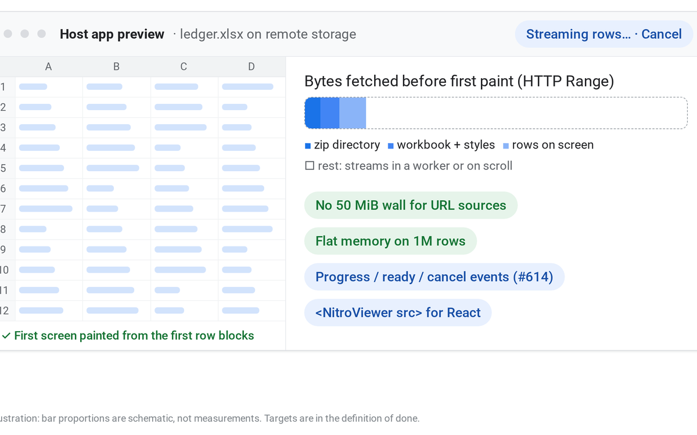

MOCKUPOpen huge workbooks straight from storage: fetch only the bytes on screen, stream the rest, no size wall
Big-workbook previews are where Nitro can beat everyone, and that is the case Jared's company has: very large Excel files on AWS EFS, previewed in a React app.
Approved 2026-11-24 (👍). Strategic multi-milestone bet; queued for the nightly build behind host-API priority work. Build lands as phased draft PRs (milestone 1 first).
Open issue #622 to vote
Approve: tap 👍 on the issue · Decline: tap 👎